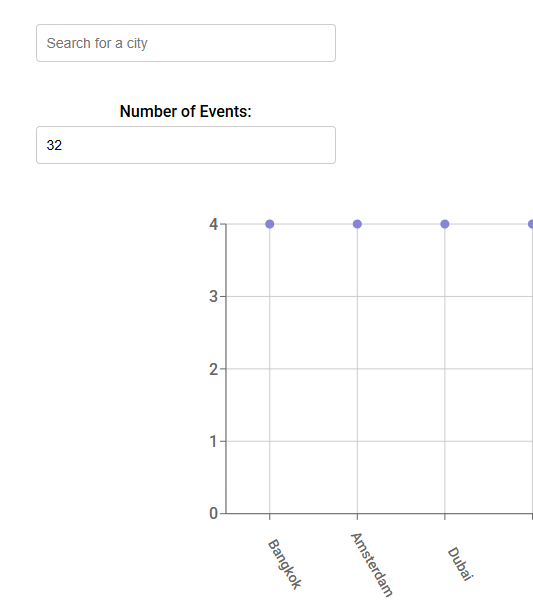
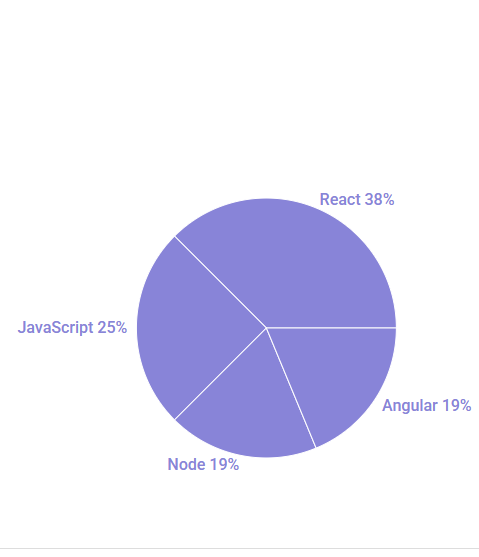

MeetApp is a serverless, progressive web application (PWA) built with React and developed using Test-Driven Development (TDD). It leverages the Google Calendar API to fetch and display upcoming events, offering users a seamless way to browse, filter, and visualize event data. Designed for both online and offline use, MeetApp can be installed directly onto a user’s device as a home screen shortcut, providing a native-like experience.
MeetApp was developed as a web application exercise during my studies at CareerFoundry.
The goal was to create an event discovery app where users can:
The frontend is a React-based single-page application that provides an interactive user interface for browsing and filtering events. It includes dynamic components like city search, event charts, and a configurable event list, all managed through React state. The app handles real-time feedback with alert systems and supports offline functionality by caching data in localStorage. User interactions trigger API calls to fetch or filter event data, which is then displayed in visual charts and lists.
The backend consists of an AWS-hosted API (using API Gateway and Lambda, implied by the endpoint) that serves event data and manages OAuth 2.0 authentication. It provides secure token validation, event retrieval, and auth URL generation for the frontend. When offline, the frontend falls back to cached mock data, but in normal operation, it fetches live data from the backend. The separation of concerns ensures that the frontend handles UI/state, while the backend manages data persistence, security, and business logic.
This structure follows modern client-server architecture, with React for a responsive frontend and AWS for scalable, serverless backend operations.
Navigating Google Calendar API rate limits required careful optimization of API calls, while implementing reliable offline sync with Service Worker caching demanded extensive debugging. Additionally, ensuring consistent PWA behavior across Chrome, Safari, and Firefox introduced cross-browser compatibility challenges.
The project resulted in a fully functional, installable PWA with offline capabilities, featuring a clean and intuitive UI with smooth interactions. Test-driven development (TDD) was effectively implemented, achieving high test coverage and maintainable code.
If I were to expand the app, I would add: